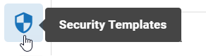

The System Manager opens. In the left pane of the System Manager, click Security Templates.

Complete the following steps to modify the permissions of a security template:
The System Manager opens. In the left pane of the System Manager, click Security Templates.

Click on the name of the security template you would like to edit. The security template profile opens on the right side of the screen.
Click the Edit icon . You are now able to modify the permissions for the selected template.
Click Save.
Related Topics